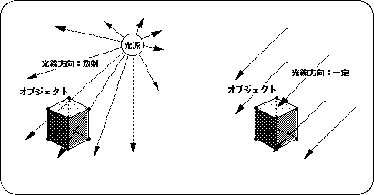
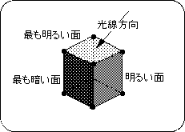
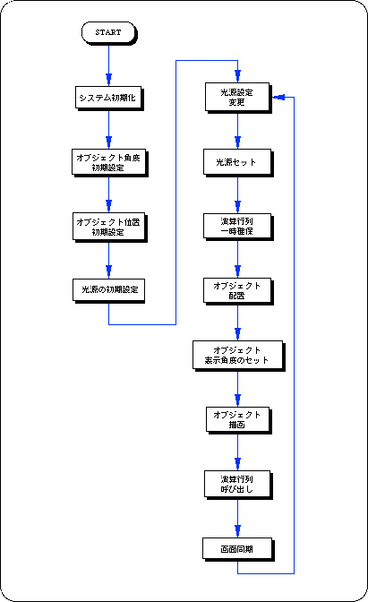

★SGL User's Manual
★PROGRAMMER'S TUTORIAL
★SGL User's Manual
★PROGRAMMER'S TUTORIAL
本章では、ＳＧＬにおける光源の設定法について解説します。光源を用いることによって、 ３Ｄグラフィックス表示されたオブジェクト群は陰影を与えられ、よりリアルな映像を描画する ことが可能となります。
しかし、これら全てを光源情報として計算し正確に描画するには、膨大な時間がかかります。
そこで、ＳＧＬではこれら光源情報の中から光源方向のみを選択してポリゴン描画に反映します。
また、光の方向に関しても、通常光はある一点からの放射として定義されますが、これも計算に時間がかかりすぎます。
そこで、光源位置を無限遠方と想定し、光の方向はオブジェクトの座標位置によらず、
常に同じ方向から照射されるものとして処理します。
＜図3-1 光源イメージモデル＞

オブジェクト表面の光源による変化は、光線の方向と各ポリゴン面の法線ベクトルの向きによって決定されます。 これをイメージ化したものが、下図になります。
図3-2 陰影イメージモデル
光源によるポリゴン面の陰影

【void slLight ( VECTOR light ) ;】
ポリゴン面は、面に対する光の入射角からポリゴンカラーを決定します。
入射角が垂直に近いほど明るく、水平に近いほど暗く表示されます。
また、負の垂直方向が最も暗く表現されます。
【Bool slPushUnitMatrix ( void )】
【void slUnitMatrix ( MATRIX mtptr )】
カレントマトリクス及びマトリクス関数の詳細は “第５章 マトリクス”を参考してください。
次のリスト3-1は、空間内に置かれた立方体に対し、光源の方向ベクトル を次々に変化させていったときの立方体ポリゴン面の陰影の変化を示したものです。
/*----------------------------------------------------------------------*/
/* Cube & A Light Source */
/*----------------------------------------------------------------------*/
#include "sgl.h"
extern PDATA PD_PLANE1;
void ss_main(void)
{
static ANGLE ang[XYZ];
static FIXED pos[XYZ];
static FIXED light[XYZ];
static ANGLE tmp = DEGtoANG(0.0);
slInitSystem(TV_320x224,NULL,1);
ang[X] = DEGtoANG(30.0);
ang[Y] = DEGtoANG(45.0);
ang[Z] = DEGtoANG( 0.0);
pos[X] = toFIXED( 0.0);
pos[Y] = toFIXED( 0.0);
pos[Z] = toFIXED(190.0);
light[X] = toFIXED(-1.0);
light[Y] = toFIXED( 0.0);
light[Z] = toFIXED( 0.0);
slPrint("Sample program 3.2" , slLocate(9,2));
while(-1){
slPushMatrix();
{
slRotY(tmp);
slRotX(DEGtoANG(15.0));
slRotZ(DEGtoANG(15.0));
slCalcPoint(toFIXED(0.0),toFIXED(0.0),toFIXED(1.0),light);
}
slPopMatrix();
slLight(light);
tmp += DEGtoANG(1.0);
slPushMatrix();
{
slTranslate(pos[X] , pos[Y] , pos[Z]);
slRotX(ang[X]);
slRotY(ang[Y]);
slRotZ(ang[Z]);
slPutPolygon(&PD_PLANE1);
}
slPopMatrix();
slSynch();
}
}

| 関数型 | 関数名 | パラメータ | 機 能 |
|---|---|---|---|
| void | slLight | VECTOR light | 光源ベクトルの設定 |
| Bool | slPushUintMatrix | void | 単位行列をスタックに確保 |
| void | slUintMatrix | MATRIX mptrt | 指定マトリクスを単位行列にする |
★SGL User's Manual
★PROGRAMMER'S TUTORIAL